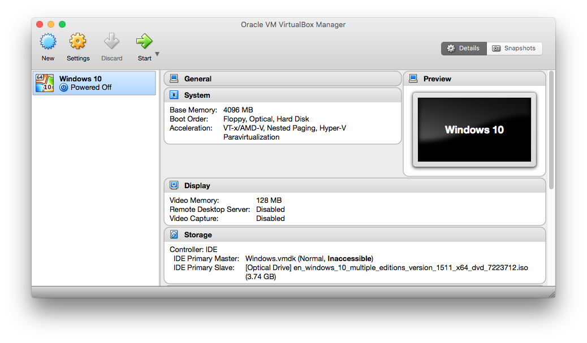
This guide uses Windows 10, but this applies to any version of Windows. I've tested this on Windows 7, 8, and 8.1. Windows 7 is the only one that doesn't suck XD
There are two easy ways to get Windows on a Mac:
Use source of physical media, such as a Windows install CD/DVD or USB flash drive.
Use VirtualBox/Parallels Desktop/VMWare Fusion and set up a virtual machine.
To play games. Or to be able to use 100% of the hardware resources for other applications, if you're into productivity and those things... VMs are much more convienent for everything else.
VMs are super convenient for many reasons:
We can use VirtualBox to start the installation process for Windows on a physical drive, then complete the installation by booting the drive using the actual hardware (instead of the VM).
See my notes down at the bottom about the "Why some Macs cannot use Boot Camp Assistant to make USB boot drive."
...because we're not stuck in the 90s anymore...
Fire up Terminal and look for your physical drive's mount point using diskutil list
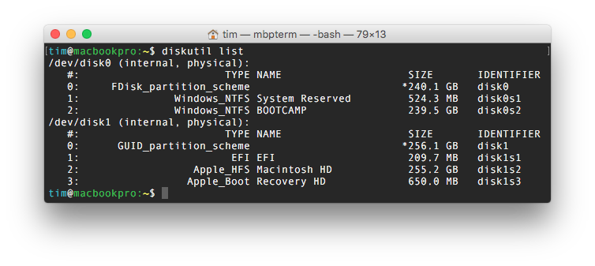
On my MacBook Pro, there are two physical SSDs. The one I am interested in using is /dev/disk0. Next, we have to set up the correct permissions for the physical drive so that userland VirtualBox can access it.
diskutil umountDisk /dev/disk0sudo chmod 775 /dev/disk0sudo chown tim /dev/disk0
VirtualBox comes with a nice tool that we can use called createrawvmdk. We will use this to create the .VMDK file that will be attached to the VM. This VMDK is simply a pointer to our physical drive.
sudo VBoxManage internalcommands createrawvmdk -filename "Windows.vmdk" -rawdisk /dev/disk0
VirtualBox will create a file called Windows.vmdk in your working directory.
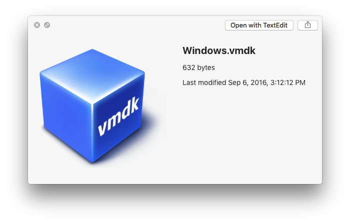
VirtualBox will remount the disk after it has created the VMDK. We need to unmount it and repeat the permissions modification:
diskutil umountDisk /dev/disk0sudo chmod 775 /dev/disk0sudo chown tim /dev/disk0
We also need to define the permissions for the VMDK file so that the VM will have access to the physical drive:
sudo chmod 775 ~/Windows.vmdksudo chown tim ~/Windows.vmdk
Now we are done setting up the VMDK for physical drive access.
Open VirtualBox and create a new virtual machine.
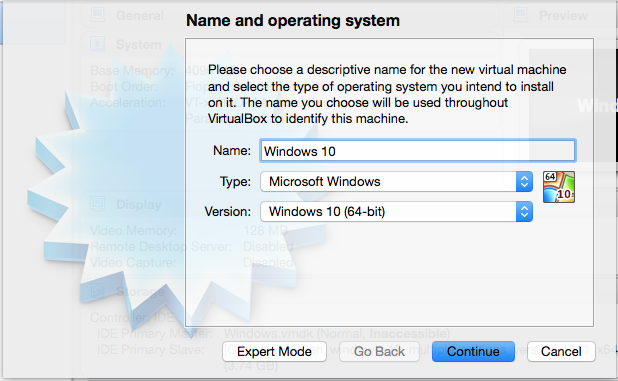
Give it a solid amount of RAM
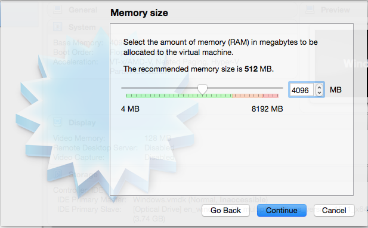
Select "Do not add a virtual disk." This is important because VirtualBox by default attaches virtual disks using a SATA controller. Initially, we need to attach the physical drive using the IDE controller. After the drive is formatted and the install files are copied over, the rest of the installation is completed using the native hardware (and thus, the native onboard SATA controller), so VBox's setup becomes irrelevant.
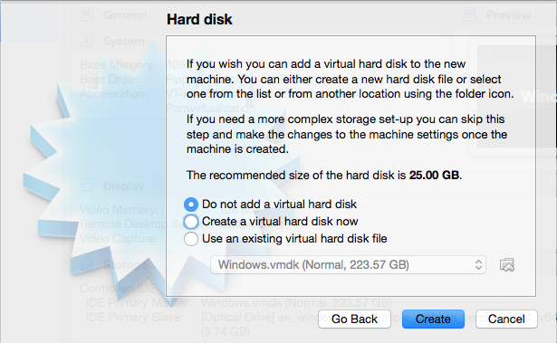
Select "Create" and we are done.
Open up the settings for your new VM and select "storage." Remove the default SATA storage controller, and add an IDE storage controller. Change the "Type" to "ICH6."
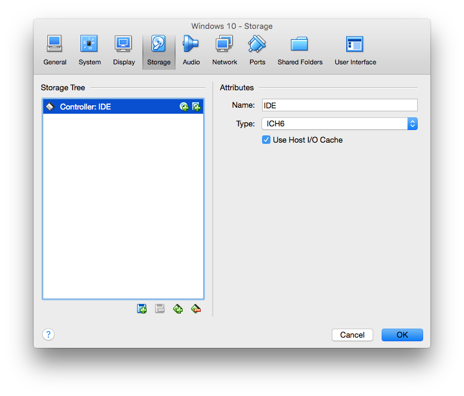
Add an optical drive, and attach your Windows ISO to it.
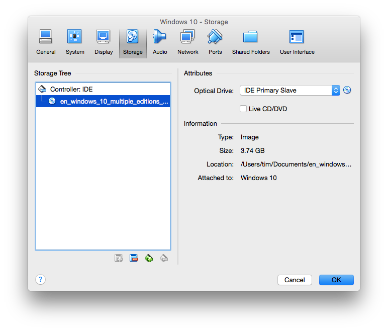
Set the permissions on the physical drive and the VMDK before attaching it to the virtual machine with
diskutil umountDisk /dev/disk0sudo chmod 775 /dev/disk0sudo chown tim /dev/disk0sudo chmod 775 ~/Windows.vmdksudo chown tim ~/Windows.vmdk
Add a virtual hard disk drive to the VM:
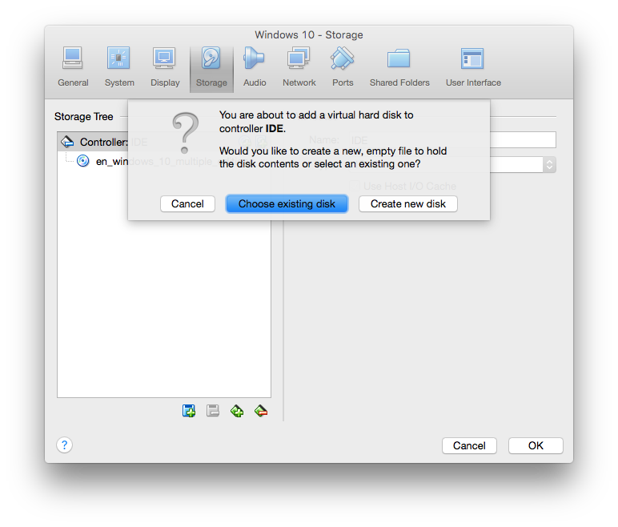
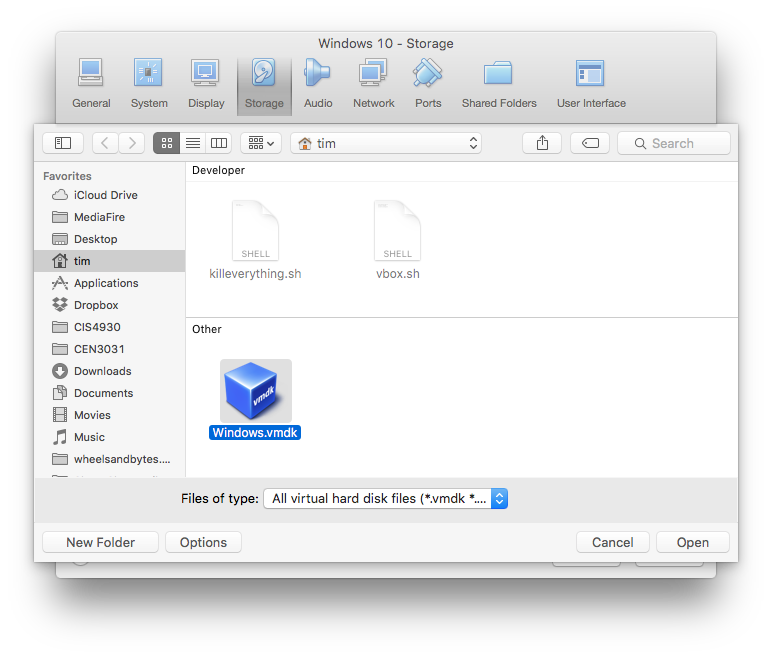
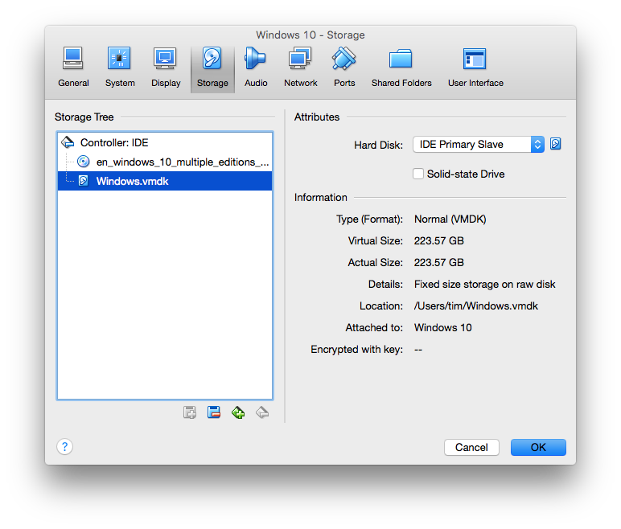
You'll notice that the size of the virtual hard disk is the same as the size of your physical disk.
When you add the VMDK, VBox mounts the physical drive, so we need to set the permissions again before we launch the VM. This needs to be done every time your Mac mounts the physical drive. This happens every time you reboot the Mac, and every time you shut down the VM.
So, once more:
diskutil umountDisk /dev/disk0sudo chmod 775 /dev/disk0sudo chown tim /dev/disk0sudo chmod 775 ~/Windows.vmdksudo chown tim ~/Windows.vmdk
Click "Start" to fire up the VM. Make sure to press a key to boot the installer from the DVD image.
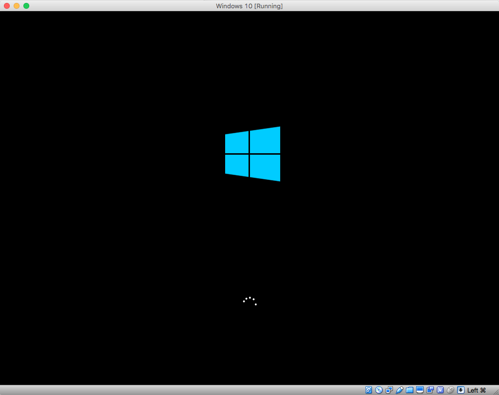
This should look familiar:
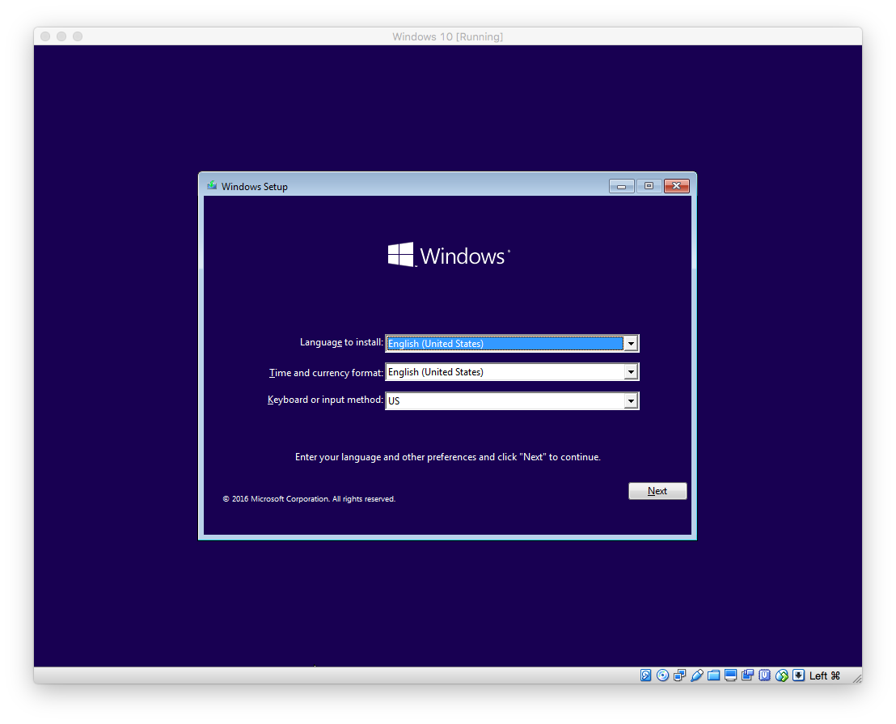
Format the drive as you normally would:
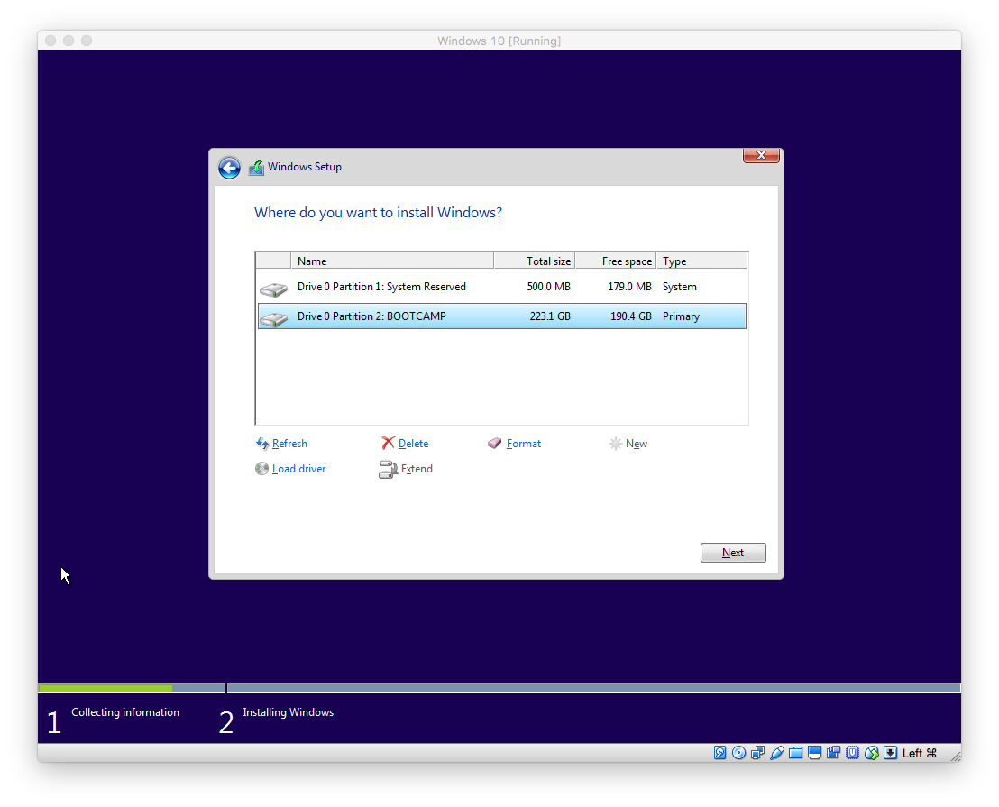
And then start the Windows installation. When it's finished copying the files, it will reboot. Click "Restart" and shut off the VM right before it boots back up. If you're not quick enough, and the installation process starts in the VM, you're gonna be starting over, so pay attention.
Reboot your Mac while holding the Option key.
Select "Windows"
Watch Windows complete the installation as if your Mac were any other PC.
Plug in the flash drive that you used to store the Bootcamp drivers, and install them in Windows. You're done! Go download Steam and Origin and play some games.
If you want to go the USB flash drive route, you're stuck with Apple's Boot Camp Assistant utility. Boot Camp Assistant can not only download the Bootcamp drivers for your Mac, but it can also use a Windows 7, 8, 8.1, or 10 image to create a USB boot drive, which will then allow you to boot your Mac from it and install Windows. However, Apple's BCA is configured such that if your Mac originally shipped with an optical drive, it will force you to use a physical Windows CD/DVD to install Windows using the Boot Camp route. This is stupid for two reasons:
It prevents us from taking advantage of the convenience and speed of USB and an ISO image of Windows on any Mac that is not a MacBook Air (or retina Pro)
If you swapped your useless optical drive for a secondary SSD/HDD carrier (OWC's Data Doubler is one example), you literally have no optical drive. BCA fails to account for hardware changes, and will refuse to allow you to create a USB drive despite not having access to an actual optical drive.
Boot Camp Assistant can also non-destructively reparition your boot disk to make room for a Windows partition. Please don't go this route. The hybrid MBR partition scheme sucks, and will instantly corrupt your Windows installation if you attempt to modify any of the GPT partitions.
We all know that installing Windows (or any OS) in a VM takes up space on your main boot drive. We also know that you obviously cannot boot from a .VDI, .VHD, .HDD, or a .VMDK file, which is the virtual hard disk file for your VM.
Windows installs itself by first copying the critical files from the installation media to the drive on which it will be installed, then reboots and continues the installation using the files already copied to the boot drive. The reason this is important is because Windows (in CSM) configures itself for the hardware that it is completing the installation on. So, if you complete the installation on the native hardware, Windows will configure itself for the native hardware. If you complete the installation in a VM, Windows will configure itself for the virtual/emulated hardware.
Copyright © wheelsandbytes 2015-2021. All Rights Reserved